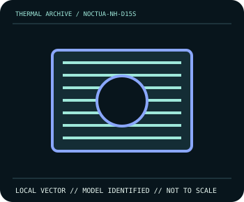

[ INDIVIDUAL COMPONENT // COOLING ]
Noctua NH-D15S
Asymmetric dual tower, 160 mm high, one NF-A15 PWM supplied.

IDENTIFICATION: Match complete model, suffix, revision and bundle before installation. Related variants can differ in dimensions, brackets, wiring, connector, and operating limits.
Manufacturer specifications
| Catalog subcategory | Tower And Dual Tower Air Coolers |
|---|---|
| Exact model | Noctua NH-D15S |
| Published specifications | Asymmetric dual tower, 160 mm high, one NF-A15 PWM supplied. |
| Compatibility and mounting | Offset can improve some PCIe clearance but does not assure fit; check socket, RAM and case. |
| Connector and electrical limitations | 12 V 4-pin PWM fan; observe header current when adding optional fan. |
Safe installation and maintenance
Disconnect AC power before mounting. Use only the exact socket-specific kit and manufacturer tightening sequence; measure case/board clearance. If cooler is removed, clean both surfaces and renew compound before reinstalling.
- Follow the exact manufacturer manual for this model and host; do not interchange similar-looking parts or hardware.
- After service, verify pump/fan operation and temperature behavior under monitored conditions before normal workload.
Manufacturer source
- www.noctua.at — Noctua NH-D15S product informationManufacturer specifications; verify current revision-specific manual and compatibility details before installation.
This static catalog entry is an identification aid, not a compatibility guarantee; ratings can vary by revision or SKU.